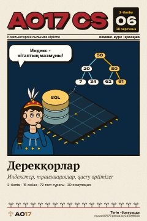

AO17 CS курсы / 2-бөлім: 3D зертхана / Дерекқорлар

Дерекқорлар · 12-сабақ · ≈20 мин · 2 қадам · 4 сұрақ
LIKE, BETWEEN, DISTINCT: үлгі, аралық, бірегейлік
LIKE, BETWEEN, DISTINCT
Мәтін үлгісі бойынша іздеу, аралықтар және қайталанбайтын мәндер.
Кино-түсіндіру: сабақтың өзегі бір минуттық мультфильмде. Мәтіні төменде.
Фильмнің мәтіні (сабақтың қадамдарынан құрастырылған)
- Сұрақ. JOIN-нен кейін бірдей жолдар шықты. Не істейсің?
- Бейне. Сыныптағы барлық оқушының туған қалаларын тақтаға жазып, сосын қайталанғандарын өшіру.
- Болжа. JOIN-нен кейін бірдей жолдар шықты. Не істейсің? Жауап: JOIN шартын тексеремін: қайталану бір нәрсе дұрыс…. DISTINCT дұрыс жауап сияқты көрінеді, бірақ қатені жасырады. Сонымен қатар ол сұранысты баяулатады: дерекқор бүкіл нәтижені сұрыптауы не хэштеуі керек.
- Көр. 1-қадам, «Қайталанбайтын мәндер». DISTINCT нәтижедегі бірдей жолдарды біреу етіп қалдырады: 12 студент 4 қалада тұрады: DISTINCT-сіз 12 жол, DISTINCT-пен 4 жол.
- Көр. 2-қадам, «LIKE және BETWEEN». LIKE мәтінді үлгімен салыстырады: %: кез келген ұзындықтағы кез келген таңбалар (бос та болады) _: дәл бір таңба 'А%': «А»-дан басталатындар. '%н': «н»-ға аяқталатындар. 'Д_на': «Дана», «Дина».
- Көр. Нақты әлемде: Сайттағы іздеу жолағы көбіне LIKE '%сөз%' деп басталады. Деректер көбейгенде ол баяулайды, сондықтан арнайы толық мәтінді іздеу (full-text search) құралдарына ауысады.
- Түйін. Мәтін үлгісі бойынша іздеу, аралықтар және қайталанбайтын мәндер.
- Түйін. Жиі қате: grade BETWEEN 70 AND 85 бағасы дәл 85 болатын жолды қоса ма? Жауап: «Жоқ, жоғарғы шеті кірмейді». Дұрысы: «Иә, екі шеті де кіреді». BETWEEN: >= және <=. Уақыт аралықтарында бұл жиі тұзаққа айналады: '2026-01-01' AND '2026-01-31' 31-қаңтардың түн…
1Қайталанбайтын мәндер
Идея
DISTINCT нәтижедегі бірдей жолдарды біреу етіп қалдырады:
SELECT DISTINCT city FROM students12 студент 4 қалада тұрады: DISTINCT-сіз 12 жол, DISTINCT-пен 4 жол.
Түйсік
Сыныптағы барлық оқушының туған қалаларын тақтаға жазып, сосын қайталанғандарын өшіру.
Есептеп көрейік
SELECT DISTINCT city пен SELECT city ... GROUP BY city бірдей нәтиже береді. Айырмасы ниетте: GROUP BY «әр топ туралы есептеу керек» дегенді, ал DISTINCT «тек қайталанбайтын мәндер керек» дегенді білдіреді.
⚠ DISTINCT-ті JOIN-нен кейінгі артық жолдарды «жасыру» үшін қолданба. Артық жолдар шықса, JOIN шартында қате бар деген сөз. DISTINCT оны түзетпейді, тек көзден тасалайды.
Енді сен
Студенттер тұратын қалаларды әрқайсысын бір реттен шығар.
Өзіңді тексер
JOIN-нен кейін бірдей жолдар шықты. Не істейсің?
Жауабы мен түсіндірмесі
Дұрыс жауап: JOIN шартын тексеремін: қайталану бір нәрсе дұрыс біріктірілмегенін білдіреді
DISTINCT дұрыс жауап сияқты көрінеді, бірақ қатені жасырады. Сонымен қатар ол сұранысты баяулатады: дерекқор бүкіл нәтижені сұрыптауы не хэштеуі керек.
SELECT DISTINCT city, year FROM students нені қайталанбайтын етеді?
Жауабы мен түсіндірмесі
Дұрыс жауап: (қала, курс) жұптарын: екі бағаны да бірдей жолдар ғана біріктіріледі
DISTINCT бүкіл жолға қолданылады. Алматы 1-курс пен Алматы 2-курс екі бөлек жол болып қалады.
2LIKE және BETWEEN
Идея
LIKE мәтінді үлгімен салыстырады:
%: кез келген ұзындықтағы кез келген таңбалар (бос та болады)_: дәл бір таңба
'А%': «А»-дан басталатындар. '%н': «н»-ға аяқталатындар. 'Д_на': «Дана», «Дина».
BETWEEN a AND b: x >= a AND x <= b деудің қысқа жолы. Екі шеті де кіреді.
Түйсік
LIKE: телефон кітабынан «А-дан басталатын» тегтерді іздеу. BETWEEN: «70-тен 85-ке дейін, екеуін қоса».
Есептеп көрейік
WHERE name LIKE '%ан%': «ан» мәтіннің кез келген жерінде. Мұндай іздеуге индекс көмектеспейді: үлгі % таңбасымен басталса, дерекқор әр жолды қарауға мәжбүр. Ал 'Ай%' сияқты бас жағы бекітілген үлгіде сұрыпталған индекс жұмыс істей алады.
Нақты әлемде
Сайттағы іздеу жолағы көбіне LIKE '%сөз%' деп басталады. Деректер көбейгенде ол баяулайды, сондықтан арнайы толық мәтінді іздеу (full-text search) құралдарына ауысады.
Енді сен
Аты «А» әрпінен басталатын студенттерді тап. Сосын бағасы 70 пен 85 аралығындағы жазылуларды шығар.
3D симуляцияда орында
- Аты «А» әрпінен басталатын студенттер
- Бағасы 70 пен 85 аралығындағы жазылулар (екі шеті де кіреді)
Өзіңді тексер
grade BETWEEN 70 AND 85 бағасы дәл 85 болатын жолды қоса ма?
Жауабы мен түсіндірмесі
Дұрыс жауап: Иә, екі шеті де кіреді
BETWEEN: >= және <=. Уақыт аралықтарында бұл жиі тұзаққа айналады: '2026-01-01' AND '2026-01-31' 31-қаңтардың түн ортасынан кейінгі жазбаларды өткізіп жібереді.
LIKE '%ан' іздеуіне индекс неге көмектеспейді?
Жауабы мен түсіндірмесі
Дұрыс жауап: Үлгінің басы белгісіз: сұрыпталған индекстен қай жерден бастап іздеу керегі белгісіз
Сұрыпталған индекс сөздіктегі әліпби сияқты: басын білсең, тез табасың. 'Ай%' индекспен жұмыс істейді, '%ай' жұмыс істемейді.
Сабақ AO17 командасының INSIDE TECH 3D платформасынан алынған: дәріс, тест және 3D симуляция - бір сабақтың бөліктері. Симуляция осы сайттың ішінде ашылады, прогресі «Менің шаңырағым» бетіне қосылады.